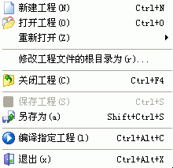

新建工程:
新建一个EASY CHM专用的工程文件 -
工程文件里将包括工程的根目录、目录索引信息、CHM设置等信息。
打开工程:
打开指定的工程文件。
修改工程文件的根目录为:
如果工程文件所在的目录位置发生了变化，您可以在这里重新指定变化后的目录作为工程文件的根目录。
关闭工程:
关闭已经打开的工程文件。
保存工程:
保存修改过的工程文件。
另存为:
另存修改过的工程文件为。
编译指定工程:
只有当有工程文件被打开时本项才可用.
编译打开的工程文件并制作为CHM文件。
退出:
关闭
Easy CHM 并退出程序.
| 版权所有 © 2000-2007 国华软件 保留全部权利. |